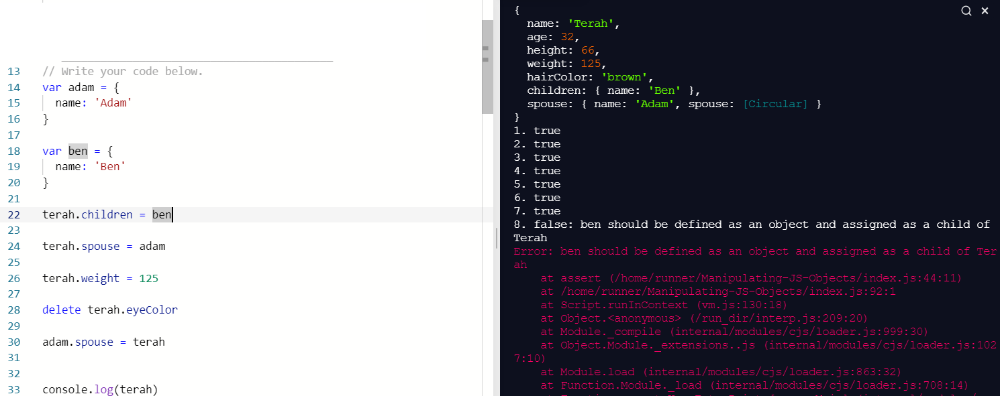
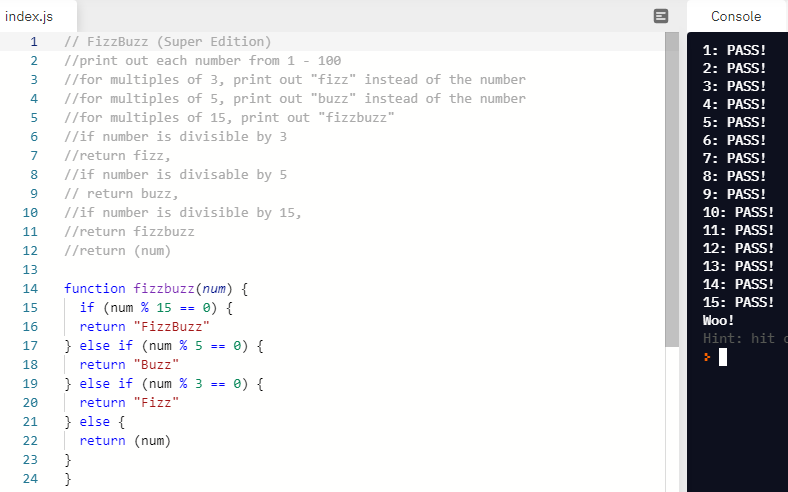

A simple problem during one of our kata challenges in javascript. The challenge was to manipulate an existing object through code so they would pass the predifined 'tests' of the challenge. So far through-out this particular kata I had been progressing quite smoothly until one this one section where I had to assign multiple objects to another object. I thought this would be simple as I had done this before using whats known as 'dot notation' method.
I input my code and the test failed. I double checked that I had the syntax correct and there were no uppercase/lowercase letters where they shouldn't be. The code looked good and made sense in my own head as to what I was trying to achieve but it still failed. Some other techniques I used were searching google and using console.log() on the object I was trying to assign to, to see what outputs were being assigned to it. The output was showing the particular objects as being there but still, it failed...
I began to feel frustrated, wondering wether the test had a bug. I tried a few variations of what I had been doing with no luck. At this point I decided to ask my peers for help as I was completely stuck. Before doing so, I searched in our group chat to see if anyone had already asked the question and indeed somebody had. The problem was that I had mis-interperated the question and assigned the the object to an existing property rather than create the new property, and assign the object to that. There was only one word difference in my original code and the correct code and it looked like this...
terah.children = ben
Instead of
terah.children.ben = ben
Through-out this I learned a little more about dot notation method, variables, objects and their property key/pairs and of course understanding the questions that are being asked.
As you can see below, it looks the part, but still wasn't right!

Another kata challenge, called 'fizzbuzz', had us put together a function in javascript that would take any given number between 0 and 100, and return it. The catch was that if the number was divisible by 3, the function should return 'fizz', if it was divisible by 5, it should return 'buzz' and if the number was divisible by 15, it should return 'fizzbuzz'. This problem was one I felt I could easily comprehend a solution for.
After some pseudocoding and researching on google I figured the best way to tackle the challenge would be an 'if/else..' statement. I learned through my research that a '%' in javascript means the remainder of the first number when divided by a second number, and is best suited for my code rather than using normal division as I first thought. Using this new found information I could formulate that if the remainder of a given number divided by either 15, 5 or 3 was equal to 0, the output should be 'fizzbuzz', 'buzz' or 'fizz', respectively. I put this all together and behold, the function worked!

Pseudocode
Im beginning to feel a little more confident in writing pseudocode after this last sprint. It has been a huge help for me in being able to break down the problem into more manageable pieces of information. The biggest issue will still be knowing what types of code to use, and how to use them effectively, but at least with pseudocode I can see what I should focus on first.
Trying something
A massive part of my experience in problem solving so far, seeing as im so new to everything, has been to just try something. More often than not it doesn't work and I have to dive further into the issue, but on several occassions it has worked, and it has left me feeling quite proud. Whether it works or not - I've noticed I often seem to learn something new from just trying something, albeit sometimes slightly off-topic.
Rubber ducky method
I had no idea what the rubber ducky method was and had research it, but it turns out im a huge believer in this method! To keep it short, its the idea that teaching/explaining something to somebody can help you gain a better understanding of it yourself as your begin to perceive it from another angle. I've done this a few times now with friends and family while showing them the problems im working on and it really does help.
Reading error messages
My confidence isn't great in reading and understanding error messages, but I have still found them helpful when problem solving. Usually they give you a good idea of where your code has a problem and refering to this, especially when it displays what line of code the problem is on, has definitely made things easier. I believe it will get even better once I can see not only where the problem lies, but why it is a problem.
Console.logging
Again, my confidence isn't great here. I understand the concept and have used it quite frequently, and found the results really helpful, but on some occasions it has thrown an error message of undefined. Im still to learn what can and can't be logged - I've noticed functions can be logged, but sometimes their parameters can be. Although I've looked into this a little bit, I've definitely got to look into it some more as I understand how useful it can be.
Googling
Quite confident here. Knowing what to ask and getting the right key words for the context, and being able to filter out the irrelevant results is crucial. Also, knowing which results in particular to look out for, as some websites do a better job than others at explaining things.
Asking peers for help
Not hugely confident here. I've asked a few questions and have always had great responses, but I tend to leave it as a last resort. Its a combination of the battle with my own ego and feeling shameful about asking a question when I know many of my peers are much further ahead in their work, and also a consequence of studying remotely, in not having my peers side by side to communicate and relate to. Though they're only a message away, it still seems unfamiliar to me and this is something I've been reflecting on a lot and would like to work on more, especially before our bootcamp starts.
Asking coaches for help
Im confident in asking my coaches and will usually leave it as a last resort, but so far they've all been really helpful in answering my questions.
Improving my process with reflection
My confidence in this grows tremendously every week as I write these reflections. I find as I put my thoughts into the keyboard and let it flow naturally, I understand better the concepts them Im talking about. Much like the rubber ducky method mentioned above.